一、更新後的投資結論
審慎觀望，默認不在星期六追入。
信念程度：偏低至中低。建議僅在極窄條件同時成立時，才考慮買入一個單位；否則應放棄本次首輪。
本更新把決策嚴格限定在三項買家約束之內：官方B組別（每名登記人最多揀選一個指明住宅物業，且須排在AX、AZ組別之後選樓）；使用官方折扣最少的建築期付款計劃（價單計劃折扣僅2%；連額外折扣及早鳥優惠，於2026年12月31日或之前簽訂臨時買賣合約則合共約10%，而非約18%的90天現金計劃）；以及對「相當持久海景」要求高信心。在此三項約束下，先前以約18%折讓為基準的「有條件參與」結論不再適用。
核心理由如下：
- 建築期計劃下，價單第1號47個兩房的成交價約為650萬至841萬港元，實用面積呎價約15,187至17,761港元，中位價約780萬港元、中位呎價約16,093港元，較第一期已登記兩房成交中位呎價14,903港元高出約8%；若選第2座A室，中位呎價約17,213港元，溢價更明顯。
- 售樓說明書並無就個別單位保證海景。根據官方典型樓面平面圖及北向標示，本批兩房之中，第2座C、D室主要朝東面向第1座，沒有充分依據稱為海景單位；第1座K室朝西，正前方為第2座樓體；相對較有機會望向三家村避風塘水域的，是第2座A室的南／西南立面，但仍受第3期、已落成的蒙地卡羅灣及近處建築影響，且並非開揚維港海景。油塘灣綜合發展區及商業（1）地帶最高120米（主水平基準）的規劃，更削弱西面灣景「永久開揚」的信心。因此，沒有任何本批兩房可被給予「高信心、相當持久的開揚海景」。
- B組別在出售首日後於AX、AZ組別選樓，精選及多數高層A、K單位已列入AX組別單位，被優先取走的機會較高。B組別較可能面對的，是名單以外的剩餘單位，當中樓層及座向同時可接受者不多。
- 重建後的兩年期XGBoost因子模型樣本外決定係數仍為大幅負值，點預測不可採用。判斷情景下，即使資本值兩年上升約5%，在扣除約3%從價印花稅、以及入伙前基本無租金的前提下，淨回報僅約2%，安全邊際不足。
若星期六在B組別仍要考慮唯一一伙，條件應同時包括：單位為第2座A室（其次才考慮第1座K室）；樓層最好為18樓或以上；建築期計劃呎價須明顯收斂至更接近第一期兩房成交水平，而非以本批A室逾17,000港元呎價追入；並且接受所見之水景主要是避風塘而非可保證的永久維港海景。第2座C、D室不建議以「海景投資」為理由購入。5樓或12樓以下單位，即使價錢較低，亦不符合本備忘錄的最低樓層建議。
二、官方B組別規則及對星期六的含義
銷售安排第1號（2026年11月23日）訂明，指明住宅物業將分AX、AZ及B三個組別出售。個人（自己名義或聯名）或公司（只可以自己名義）登記人可以同時參與A組別（AX或AZ其中之一，不得兩者同時參與）及B組別。B組別是官方購樓組別，並非市場俗稱。
| 項目 | 官方內容（銷售安排第1號） |
|---|---|
| 合資格人士 | 所有已遞交購樓意向登記表格B的個人及公司登記人（「B組別登記人」）。 |
| 可選單位 | 所有餘下及仍可供選購的指明住宅物業，包括AZ組別單位。 |
| 揀樓上限 | 每名登記人須揀選最多一（1）個指明住宅物業。此與買家「最多買一伙」的自我約束一致，且屬強制性上限。 |
| 選樓次序 | AX組別須就每份登記揀選不少於兩（2）個及不多於四（4）個AX組別單位，同一登記人可揀選之精選單位上限為一個；AX組別被揀選單位合共不得多於62個。其後由AZ組別（同樣須揀選2至4個）承接未售出的AX組別單位。AX或AZ時段結束後，餘下單位（包括未售出的AZ組別單位）才供B組別揀選及購買。 |
| 抽籤及報到 | 決定B組別優先次序的抽籤，於2026年11月27日大約下午5時或之後在地點2進行；結果（登記號碼、抽籤結果順序及報到時段）於當日大約下午6時或之後張貼於地點2，登記人將不獲另行通知。每份B組別購樓意向登記可獲分配1個籌。出售首日須按公布的報到時段親臨地點1，並攜同身份證明文件及有效B組別購樓意向登記的正式收據，否則優先次序可能終止。 |
| 意向登記截止 | 網上遞交截止時間為2026年11月26日中午12時。本備忘錄假設買家已完成B組別登記。 |
| 本票 | 遞交意向登記時，（總）金額為港幣100,000元、抬頭「的近律師行」或「Deacons」。每購得一個指明住宅物業，須即場另交一張指定金額本票：AX及AZ組別單位為200,000港元，其他類型為100,000港元。臨時訂金為成交價的5%，餘額以本票及／或支票支付。 |
對星期六的實際含義是：B組別並非首輪最先選樓的組別。AX組別的精選單位（價單上標有「*」者）包括第2座9A、15A、19A、23A、28A、15C、22C、23C、27C、31C、9D、15D、19D、23D、27D等，以及多數高層第1座K室。由於AX登記人必須一次選兩至四伙，較受歡迎的高層A室及K室被取走的機會較高。並無列入AX名單的兩房，理論上不會在AX／AZ時段出售，會直接進入B組別可供盤，包括：第1座8K、12K、18K；第2座5C、8A、8C、8D、9C、12A、12C、12D、18A、18D、19C、22A、22D、27A、28C、28D。若買家堅持較高樓層及相對較可取的座向，B組別較實際的候選是第2座18A、22A、27A，其次為第1座18K；其餘多為過低樓層或主要朝東、缺乏海景依據的單位。
出售首日地點為九龍灣宏照道33號國際交易中心29樓及31樓部份（地點1），時間為上午9時至下午11時。第一批共128個單位（81個一房、47個兩房）。第二批10個三房則由11月29日起以招標出售，不在本備忘錄的兩房建議範圍。
三、付款辦法：為何以建築期計劃為決策基準
價單第1號列明四種付款辦法，計劃本身的折扣分別為：90天現金計劃10%、180天現金計劃8%、300天現金計劃6%、建築期付款計劃2%。此外，所列單位均可獲得「Peerless Excellence」3%、「CBD Gateway」2%、「Victoria Splendor」1%及「Aquamarine Voyage」1%，合共7%；若在2026年12月31日或之前簽訂臨時買賣合約，另有早鳥1%。星期六簽約符合早鳥條件。成交價為標價乘以（1−總折扣），再向上調整至最接近的100港元。
折扣最少的官方付款辦法是（D）建築期付款計劃，計劃本身只減2%。連額外折扣及早鳥後，星期六的總折讓約為10%。這是本備忘錄定價、印花稅、負擔能力及兩年回報分析的唯一決策基準。約18%的90天現金計劃只供比較，不作為建議依據。
| 付款辦法 | 計劃折扣 | 連額外及早鳥（約） | 兩房呎價範圍（港元） | 角色 |
|---|---|---|---|---|
| A 90天現金 | 10% | 18% | 約13,837–16,182 | 僅作比較 |
| B 180天現金 | 8% | 16% | 介乎A與C之間 | 僅作比較 |
| C 300天現金 | 6% | 14% | 介乎B與D之間 | 僅作比較 |
| D 建築期付款 | 2% | 10% | 15,187–17,761 | 決策基準 |
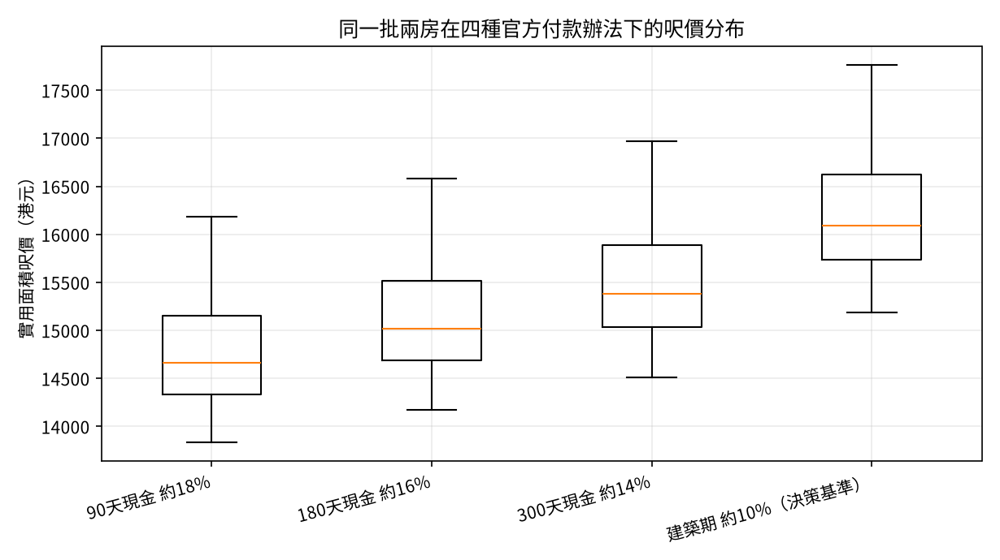
建築期計劃的現金流較90天現金寬鬆，但買入價明顯較高。投資回報必須用較高的淨入價計算，不能把約18%折讓下的呎價代入本建議。
四、兩房定價、印花稅與負擔能力
價單第1號兩房共47個：第1座K室16個（實用面積503平方呎／46.704平方米，開放式廚房，估價署B類）；第2座A室10個（461平方呎／42.862平方米，開放式廚房，B類）；第2座C室11個（429平方呎／39.849平方米，開放式廚房，A類，少於40平方米）；第2座D室10個（484平方呎／45.003平方米，梗廚，B類）。
| 座向 | 單位數 | 建築期成交價 | 呎價（港元） | 中位呎價 | 未列入AX、較可能在B組別出現的單位 |
|---|---|---|---|---|---|
| 第1座K | 16 | 764萬–841萬 | 約15,200–16,715 | 15,831 | 8K、12K、18K |
| 第2座A | 10 | 775萬–819萬 | 約16,800–17,761 | 17,213 | 8A、12A、18A、22A、27A |
| 第2座C | 11 | 653萬–709萬 | 約15,200–16,400 | 15,939 | 5C、8C、9C、12C、19C、28C |
| 第2座D | 10 | 755萬–795萬 | 約15,600–16,418 | 15,987 | 8D、12D、18D、22D、28D |
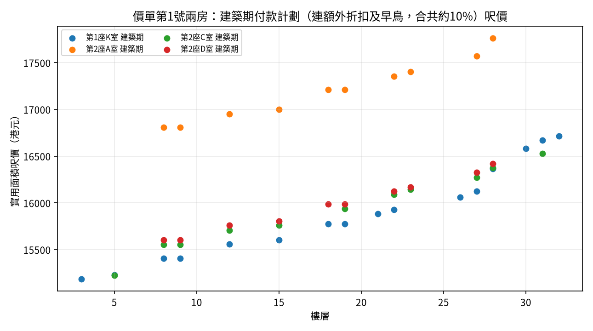
從價印花稅按2026年2月26日起適用的住宅物業稅階計算（第一標準／第二標準第1部，稅務局）。本批建築期成交價介乎600萬與900萬港元之間，大部分落入3.00%稅階（超過6,642,860港元）；較低價的C室可能落入600萬至6,642,860港元的邊際稅階。兩房從價印花稅約188,050至252,222港元，中位約234,114港元，約等於成交價的3.0%。額外印花稅及買家印花稅自2024年2月28日起不適用。賣方文件訂明，買方支付從價印花稅；若使用賣方律師（的近律師行），賣方可代付買賣合約及轉讓契律師費。
按揭方面，金融管理局自2024年10月16日起，私人住宅按揭貸款成數普遍最高七成。以中位單位約780萬港元計，三成首期約234萬港元，七成按揭約546萬港元，另須備妥印花稅及成交費用。最優惠利率（匯豐報價）於2026年10月的月平均為5.00%（2025年10月31日起為5%）；港元隔夜平均指數2026年10月平均約2.31%。現行銀行同業拆息（香港銀行公會，2026年11月26日）1個月約2.935%、3個月約3.436%，可作為浮息按揭的參考，但本研究未能取得完整官方月度拆息平均數列，故不以臆測的歷史拆息序列代入模型。
地契為油塘市地段第46號餘段，交換條件第20430號，年期由2024年1月24日起計50年，約於2074年1月屆滿。星期六購買時剩餘約47年，預算入伙時剩餘約45年。剩餘年期可能影響部分銀行的按揭年期、成數及次級市場接受程度，屬中長期價格風險，必須計入。
售樓說明書停車場樓面平面圖就第2期註明「不適用」：本分期並無住宅停車位可供一併認購。一期成交紀錄冊（2026年11月17日）共解析587宗登記、548宗有面積，整體成交中位呎價14,684港元；其中兩房209宗，中位成交價724萬港元，中位呎價14,903港元（第25及75百分位約14,173及15,530港元）。建築期計劃下，本批兩房中位呎價較第一期兩房成交中位高出約8%。
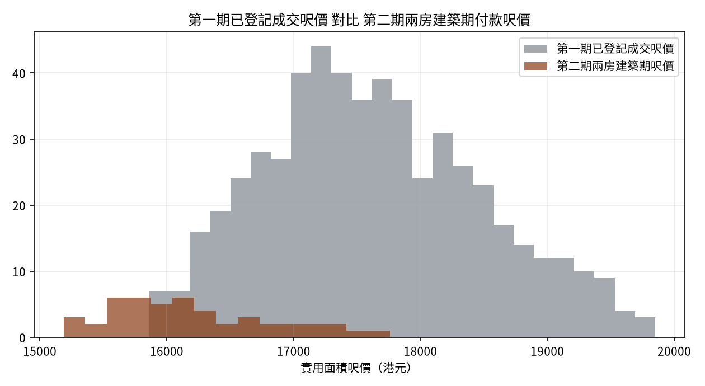
五、區域發展規劃：分區計劃大綱、油塘灣與第3期
項目位於觀塘區茶果嶺、油塘、鯉魚門。適用的法定圖則為茶果嶺、油塘、鯉魚門分區計劃大綱核准圖編號S/K15/29，於2026年6月12日由行政會議核准並刊憲。售樓說明書第9節載有摘錄圖，並註明由規劃署在城市規劃委員會指示下擬備，經地政總署署長准許複製。規劃範圍約264公頃，西面為維多利亞港、偉業街及茶果嶺道，南面為鯉魚門海峽，東面為照鏡環山及魔鬼山一帶。
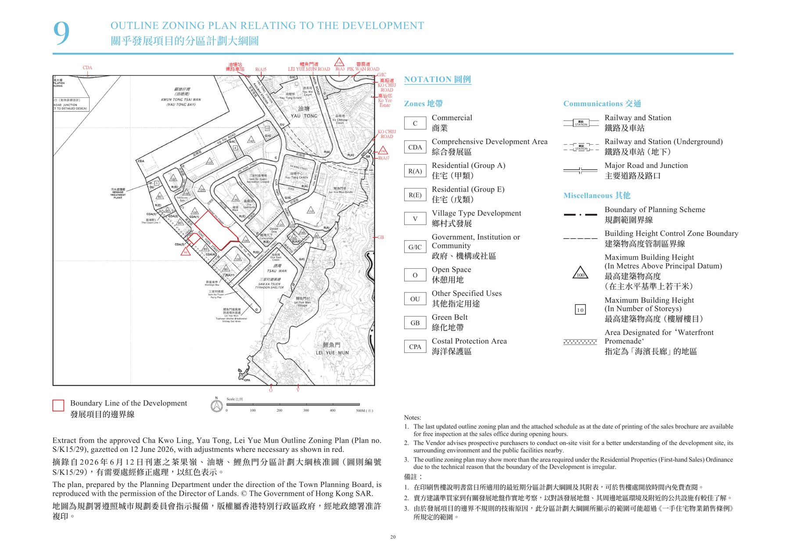
油塘灣
項目以西、西北的油塘灣，長期規劃為綜合發展區，旨在全面重建灣畔的船廠、木材場、貯物及工業樓宇，並設置海濱長廊。2026年核准圖的一項主要修訂，是將油塘灣一處用地由「綜合發展區」改劃為「商業（1）」地帶，以便把現有工業樓宇（永善工業大廈，約16層，1984年落成，主要作貨倉）重建為商業／辦公樓，最高地積比率11.0、最高建築物高度120米（主水平基準），並規定海濱長廊。城市規劃委員會都會規劃小組委員會在審議時，曾就申請人原先提出的130米高度及會否偏離「臨海較低、內陸較高」的梯級式高度輪廓表達關注，最終同意以120米為上限。該商業用地約在油塘站以西約450米、茶果嶺道一帶，屬於油塘灣北翼，並非緊貼本第2期塔樓正前方，但屬於同一海灣景廊的一部分。
商業（1）改劃並不等於整個油塘灣綜合發展區已經取消。其餘由財團持有的油塘灣海旁地段，規劃意向仍是綜合住宅、酒店、商業、社區設施及海濱長廊。公開的規劃申請文件曾包括把冰廠用地（油塘灣海旁地段第71號）作為新的第3期、重建為約34層住宅樓宇，以及討論把船廠等用途除污及停用。上述方案須視乎契約、土地業權（包括不同意業主地段）及進一步批准，並非必然按某一份申請圖則落成，但足以說明：西面海灣並非法定上的永久開揚視廊。一旦灣內樓宇按最高約120米或數十層住宅的規劃意向重建，其高度可與本項目相若甚至略高（本項目最低住宅樓層水平為14.95米主水平基準，住宅共27層，屋頂連機電層粗略估計接近100米上下，售樓說明書橫截面並未標示主屋頂的精確主水平基準高度，故不作精確宣稱）。
擎海第3期及第1期
官方布局圖顯示，整個發展項目分三期。第2期（本分期）為第1座及第2座，位於地段東南、近仁宇圍及東源街出入口；第2座在第1座的西北。第1期（第3、5、6、7、8座）沿地段西、北面伸展，即更靠近油塘灣一側。第3期以米色標示，位於地段南至西南、近崇和徑及東源街一帶。認可人士估計第1、2、3期的建築物及設施落成日期同為2028年5月8日（與第2期物質期2028年12月30日的定義不同）。因此，第3期不應視為遙遠的「未來風險」，而應視為入伙時很可能已經存在的鄰座。售樓說明書相關資料亦提醒，其後分期的建造工程可能對景觀、噪音及塵埃有重大影響。

鄰近已落成或已改劃用地
仁宇圍與崇信街交界、原先的「綜合發展區（5）」已改劃為「住宅（甲類）11」，以反映2023年落成的住宅發展「蒙地卡羅灣」（Montego Bay）。該用地的高度限制為臨海部分80米、內陸部分100米（主水平基準），地積比率約5，並須提供海濱長廊。蒙地卡羅灣緊貼本項目東南／南面一帶，高度與本項目相若，可能佔去部分朝南或東南的近景。東源街、仁宇圍一帶過往的綜合發展區規劃綱領，亦要求以住宅及／或商業用途逐步取代工業，並處理工業與住宅毗鄰的噪音、空氣及污染問題。
六、鄰近工業設施及環境影響
油塘工業區自1990年代末起，已逐步由工業地帶改劃為綜合發展區、住宅（戊類）及商業地帶，規劃意向是淘汰工業、處理工業與住宅接口。但直至近年，東源街及避風塘一帶仍有混凝土配料廠、回收場、沙倉、修車、魚類批發市場、海水抽水站及垃圾收集站等用途。
- 混凝土配料廠：環境保護署2026年5月14日公布，東源街6號配料廠營辦人計劃於2026年6月中全面停止混凝土生產，並撤回指明工序牌照續期申請，隨後拆除。該署指，這標誌油塘區最後一座大型水泥生產作業結束；較早前已拒絕東源街20號及22號廠房的續牌，並曾提出檢控。若停產及清拆按公布落實，對空氣質素及粉塵屬正面。惟清拆及隨後重建本身仍可能帶來一段時間的塵埃、噪音及重型車輛，且停產並不自動等同該地塊將永久維持低矮或空置。
- 油塘灣船廠、木材場、冰廠及貨倉：灣內海旁地段傳統用途包括造船修船、鋸木及冰廠冷凍。規劃及環評文獻早已把這些設施的除污及停用，列為綜合重建的一環。只要有關作業仍然存在，即可能帶來噪音、氣味、夜間作業及視覺上的工業景觀；一旦重建為高樓，則由「污染及工業外觀」轉為「高度及視廊」問題。兩者對長期樓價的含義不同，但都不是「景觀及環境從此不變」的依據。
- 三家村避風塘、鯉魚門海鮮及魚類批發：避風塘為指定避風用途，水域本身較有可能長期保留，但艇隻、夜間燈光、柴油氣味及觀光人流會持續存在。魚類批發市場及熟食市場在規劃綱領中被列為須處理的滋擾來源，其去留視乎個別用地的重建進度，不能假設短期內完全消失。
- 道路及內街：東源街毗鄰建築物的路面約為主水平基準以上4.36至4.53米；仁宇圍約4.40至4.51米；崇耀街則高達17.86至18.02米，已高於最低住宅樓層水平14.95米。售樓說明書典型平面在第1座東面及南面標示隔音推拉窗／隔音板，部分註明僅適用於3樓至8樓或3樓至10樓，顯示較低樓層須面對經官方確認的交通噪音。

對長期價格的含義宜分開兩段來看：淘汰混凝土配料廠及逐步清除具滋擾的工業，有利改善空氣、氣味及地區形象，對中長期住用需求可以是正面因素；但同一輪重建會把低矮工業轉為高密度住宅或商業樓宇，從而改變視廊。不能把「工業消退」簡單等同「海景從此永久」。亦須注意，第2期沒有住宅停車位，對部分自用或出租客群的接受程度可能構成折讓。
七、較持久海景：單位與座向甄選（保守）
售樓說明書沒有就任何單位保證海景。市場傳述的「港島及九龍雙海岸」屬賣方宣傳層次，必須以官方平面、布局、鳥瞰及分區計劃大綱交叉核對。以下判斷是根據平面圖北向、第1座與第2座相對位置、第1期及第3期布局，以及油塘灣、避風塘的法定規劃所作出的保守推論，並非景觀保證，亦不是現場實測。
地理關係可概括為：油塘灣及維港水域大致在地段以西；三家村避風塘在南；內陸道路及崇耀街在東及北；第1期塔樓佔用地段西、北較靠海的位置；第2期反而在地段東南端。因此，第2期「朝西望海」的視線，須先越過第2座或第1期樓體，再進入未來可能重建的油塘灣綜合發展區。

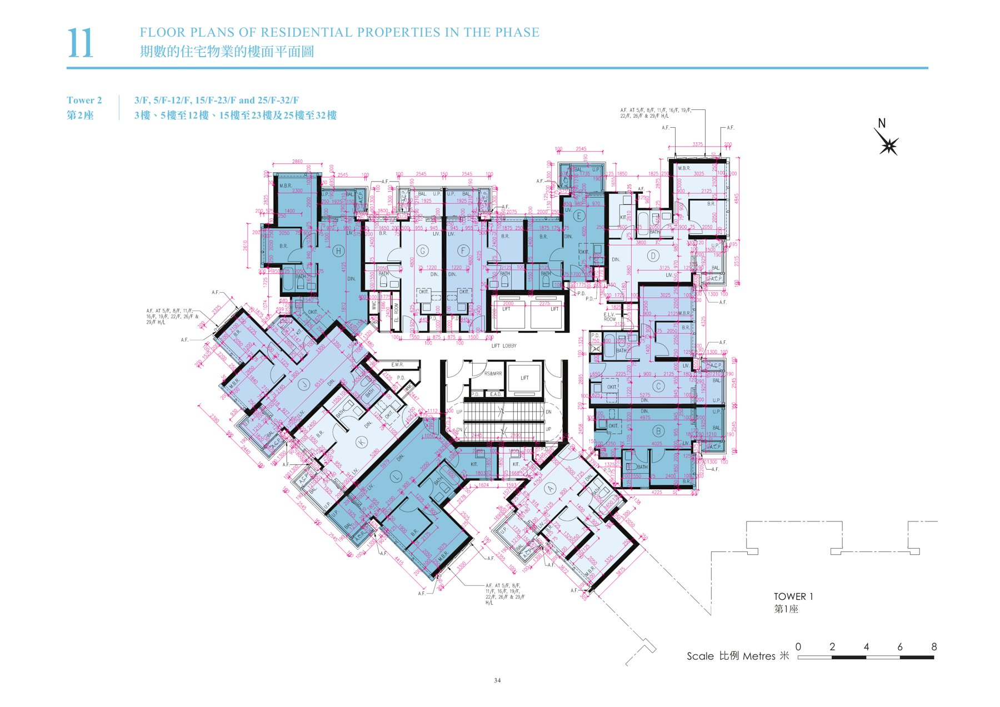
| 座向 | 主要朝向（按典型平面） | 較持久海景的相對信心 | 說明 |
|---|---|---|---|
| 第2座A室 | 東南尖端朝向第1座；長邊可朝南／西南 | 中（避風塘水域，並非開揚維港） | 在本批47個兩房中，相對較有機會望向東源街以外的三家村避風塘水域。避風塘屬指定用途，水域本身較可能保留，後方鯉魚門村為鄉村式發展，高度較低。惟第3期位於地段南至西南、蒙地卡羅灣已在仁宇圍一帶落成（臨海80米、內陸100米），近處仍可能有重建。此屬「避風塘水景」而非可保證的永久維港海景，信心不得評為高。 |
| 第1座K室 | 西／西南 | 中低 | 客廳主要朝西，正前方為第2座樓體，油塘灣開揚視線並不成立。西南角度或可瞥見東源街及避風塘方向，但須視乎第2座南翼及第3期是否擋線。不能稱為高信心持久海景。 |
| 第2座C室 | 東，面向第1座 | 低／無海景依據 | 客廳及露台朝東，正對第1座，屬樓距或內園／道路方向。不建議以海景為購入理由。開放式廚房、A類面積（少於40平方米）在轉售及按揭分類上亦較B類兩房不利。 |
| 第2座D室 | 東／東北，面向第1座 | 低／無海景依據 | 客廳及露台朝東，主要望向第1座。梗廚是本批兩房中唯一封閉式廚房，對部分自用客或有加分，但並不構成海景。不建議以海景投資為理由購入。 |
補充兩點，以免高估「未在今次發售的朝西單位」。第2座西及西南的J、K、L及西北的H等單位，並不在價單第1號兩房名單內，星期六B組別不能選購。即使未來發售，其西面海灣視線仍須面對第1期樓體及油塘灣綜合發展區、商業（1）地帶120米高度限制的長期變更風險，同樣不宜給予「相當持久開揚海景」的高信心。
因此，若目的是「高信心、相當持久的海景」，本批單位的誠實結論是：沒有單位達到該標準。若把標準降為「相對較可能長期看到一片水域（避風塘），並接受並非維港開揚」，則僅第2座較高樓層的A室較接近，其次是較高樓層的第1座K室；C、D室不符合。
八、最低樓層建議（按座向）
官方橫截面圖標示：最低住宅樓層水平為14.95米（主水平基準），位於2樓樓面；轉換層、康樂設施、升降機大堂及有蓋園景區在其下；東源街路面約4.36至4.53米，轉換層相對街道約10.42至10.59米。崇耀街路面17.86至18.02米，已高於2樓樓面，約相當於3樓附近。住宅層為2、3、5至12、15至23、25至32樓（不設4、13、14、24樓），共27層。
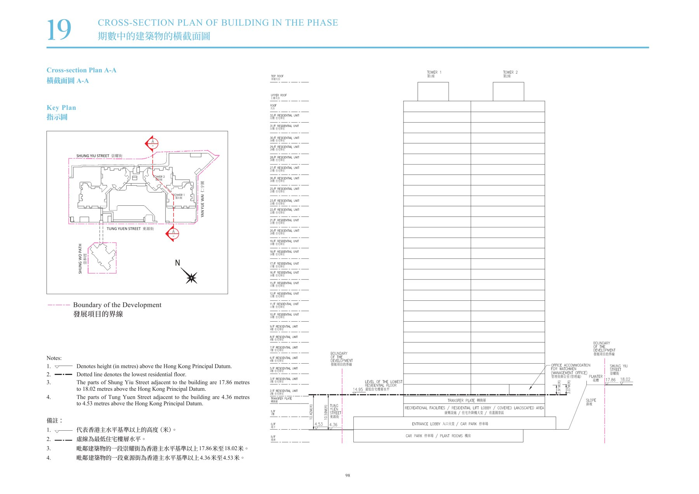
建議的邏輯是：避開已在圖則上確認須設隔音設施的低層、避開與內街及近處工業／貨倉高度接近的樓層，並為避風塘或西南水域視野預留净空；同時承認，若第3期為相近高度的塔樓並落入視線，則即使買高層也未必能「望過去」。
| 座向 | 建議避免 | 可接受的最低帶 | 較合理的目標帶 | 依據 |
|---|---|---|---|---|
| 各座通用 | 2樓至12樓 | 15樓 | 18樓或以上 | 2樓低於崇耀街；3樓約與崇耀街平；南面及東面隔音裝置多註明3至8樓或3至10樓；近處仍可能有數層至十數層的工業或住宅樓體。15樓是「剛離開街道及標示隔音層帶」的下限，並非舒適或景觀意義上的理想水平。 |
| 第2座A | 12樓或以下（8A、12A不建議） | 15樓（若仍要買） | 18樓、22樓、27樓或以上 | 若論點是避風塘水域及減少路面、艇隻與近處屋苑的視線遮擋，應取18樓或以上。B組別名單以外而落在此帶的單位為18A、22A、27A。28A為精選單位，料在AX組別先被揀選。即使高層，若第3期或蒙地卡羅灣擋線，水景仍可能只餘夾角。 |
| 第1座K | 12樓或以下（8K、12K不建議） | 15樓 | 18樓或以上 | 西面始終有第2座，樓層再高也不能「望走」鄰座，只能改善西南夾角及減少街道噪音。B組別名單以外且達18樓的，只有18K；其餘高層K室多已列入AX。 |
| 第2座C、D | 不宜以海景為買入理由；若純自用，仍建議避開10樓或以下 | 15樓（僅就噪音／街道） | 不適用於海景策略 | 主要朝東對第1座，樓層高低不改變「沒有海景依據」的結論。28C、28D雖高且可能在B組別出現，但不應作為海景投資標的。 |
總結：若仍要在B組別買一伙，樓層紀律應是18樓或以上；15樓只是為避開最差的街道、隔音層帶及近處低中層遮擋而設的絕對下限。5樓的T2-05C雖然是本批最平的兩房，但樓層、座向與長期升值條件都不符合本更新的約束。
九、市場、利率與兩年回報情景
差餉物業估價署私人住宅售價指數（1999=100）在2026年10月：所有類別319.0，按年約+8.2%；B類309.9，按年約+8.1%。指數仍較2021年9月高位398.1低約19.9%，較2025年3月低位284.9高約12%。2026年6月曾見323.4的階段高位，其後回軟。截至2026年10月，過去24個月所有類別已實現回報約+9.6%。土地註冊處數字顯示，2026年10月住宅樓宇買賣合約4,512份，按月跌約5.2%，按年跌約21%。
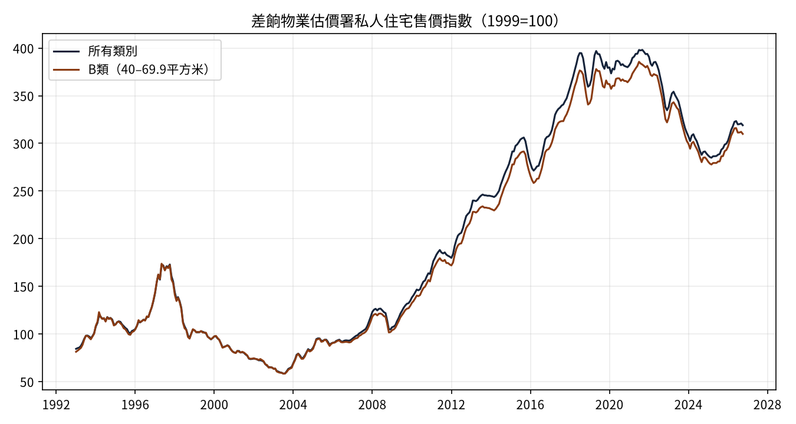
美國國庫券方面，本研究下載了財政部官方每日不變期收益率曲線（1990年至2026年）。取數日期為2026年11月27日（亞洲／香港），數列最新交易日為2026年11月25日：3個月4.34%、2年4.61%、5年4.65%、10年4.85%、30年5.24%。10年減2年的斜率約為+24個基點，屬輕微向上的正常曲線，並非倒掛。聯繫匯率下，美元利率仍會制約港元利率中樞。當日香港最優惠利率為5%；港元隔夜平均指數近日低於3%。以估價署租金及售價指數推算的租金收益率代理，2026年10月約3.0%，低於10年期美債及本地最優惠利率，息差並不寬裕。
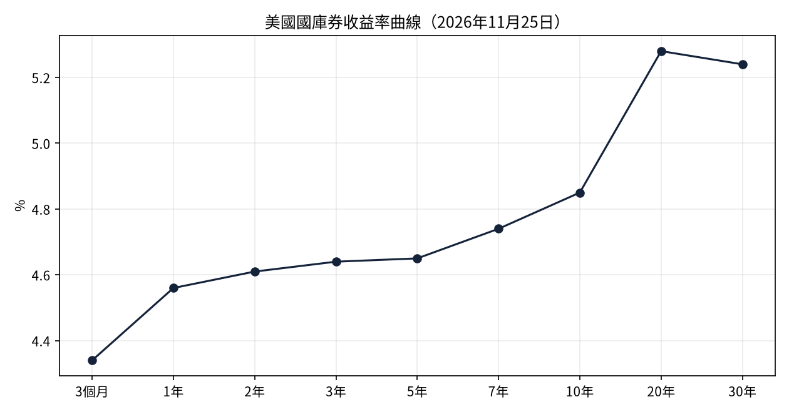
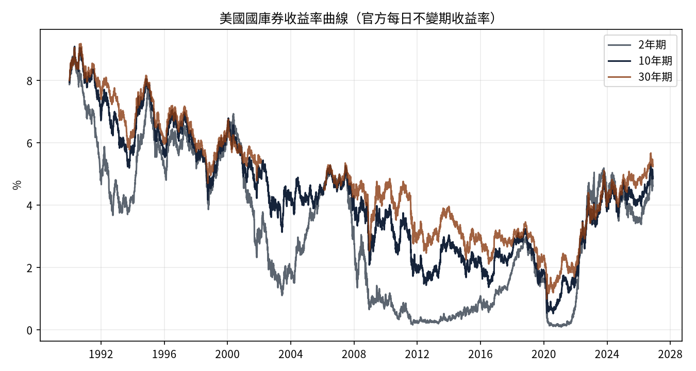
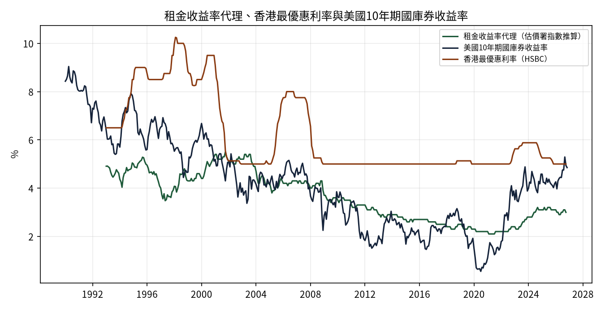
其他已取得的宏觀數列（取數日期均為2026年11月27日）：政府統計處綜合消費物價指數2026年10月為111.8（2019年10月至2020年9月=100），按年+2.2%；本地生產總值環比物量2026年第3季按年+5.2%（修訂數字），表註並載列2026年全年實質增長預測為4.8%；年中人口2026年6月約751.83萬，按年約+0.26%；建築署建築工程投標價格指數2026年第2季為1,836，按年約−1.0%。經濟活動並非處於收縮，但樓價指數在2026年下半年已經轉軟，成交按年下跌，利率中樞仍高於租金收益率代理。
已實現24個月回報的歷史分布（所有類別）：2000年起中位數約+12.1%；2015年起中位數僅約+2.0%，第25百分位約為−11%。近期這段「高利率、需求管理措施退場後」的經驗，比長樣本更貼近未來兩年的風險。
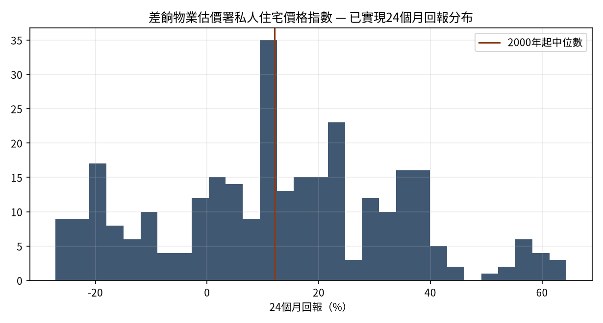
判斷情景（明確標示：並非模型點預測）
由於下文模型的樣本外表現不可用，兩年資本值展望改用判斷情景。以中位單位成交價7,803,800港元、從價印花稅234,114港元為例，並假設入伙前基本無租金、忽略律師費（若使用賣方律師或可由賣方支付）及持貨期間的機會成本：
| 情景 | 兩年資本值變化 | 扣除印花稅後的淨回報（約） |
|---|---|---|
| 不利 | −10% 至 −5% | 約 −12.6% 至 −7.8% |
| 審慎基準 | 0% 至 +8%（中位約+5%） | 約 −2.9% 至 +4.9%（+5%時約+1.9%） |
| 樂觀 | +10% 至 +15% | 約 +6.8% 至 +11.7% |
在審慎基準的中位假設下，淨回報僅約兩個百分點，幾乎只夠彌補印花稅，尚未計算首期及訂金的機會成本，也尚未反映本批呎價已高於第一期成交的溢價。若市場只是持平，買入當日已錄得約3%的印花稅成本。這是「默認不追入」的量化依據。美元兌港元按7.80換算，不另計外匯風險或兌換差價。
十、因子模型與模型卡
本研究重建了以差餉物業估價署指數未來24個月百分變化為目標的XGBoost因子模型，分別擬合所有類別及B類。訓練期至2018年12月，驗證期2019年至2021年，測試期2022年1月至2024年10月（測試期最後一個月份須已有完整24個月已實現回報）。
相對上一版本，本次加入並實際取得的因子包括：美國2年及10年期國庫券收益率、3個月收益率及10年減2年斜率（官方每日數列按月取期末值）；綜合消費物價指數按年變動；本地生產總值環比物量按年變動（季度向前填充）；人口按年變動（半年數列向前填充）；建築工程投標價格指數按年變動；租金收益率代理及其相對美債、最優惠利率的息差。沿用滯後回報、最優惠利率、港元隔夜平均指數（如有）、外匯基金票據收益率、成交宗數及需求管理政策虛擬變數。
明確省略、並非臆造的數列：完整官方月度銀行同業拆息平均（未能取得機器可讀金管局表）；恒生指數完整歷史收市（本次可用接口未能下載，故不估計相對股市的beta或alpha）；失業及單一「建材綜合指數」（統計處建材指數按個別物料編製，故改用建築署投標價格指數作為建造成本因子）。
| 模型 | 訓練R² | 驗證R² | 測試R² | 測試RMSE | 是否採納點預測 |
|---|---|---|---|---|---|
| 所有類別 | 高（樣本內） | 大幅為負 | −8.12 | 約0.33 | 否 |
| B類 | 高（樣本內） | 大幅為負 | −7.04 | 約0.31 | 否 |
測試期實際24個月回報均值為負，模型卻傾向輸出偏高預測，樣本外決定係數為大幅負值，顯示模型過度擬合、在利率轉向及政策轉變的時段並不穩定。模型在2026年10月特徵上的點預測（所有類別約−18.5%，B類約−16.9%）只載於此處備查，不得作為投資結論的依據。投資結論只使用上一節已標明的判斷情景，以及2015年起偏弱的已實現24個月回報分布。
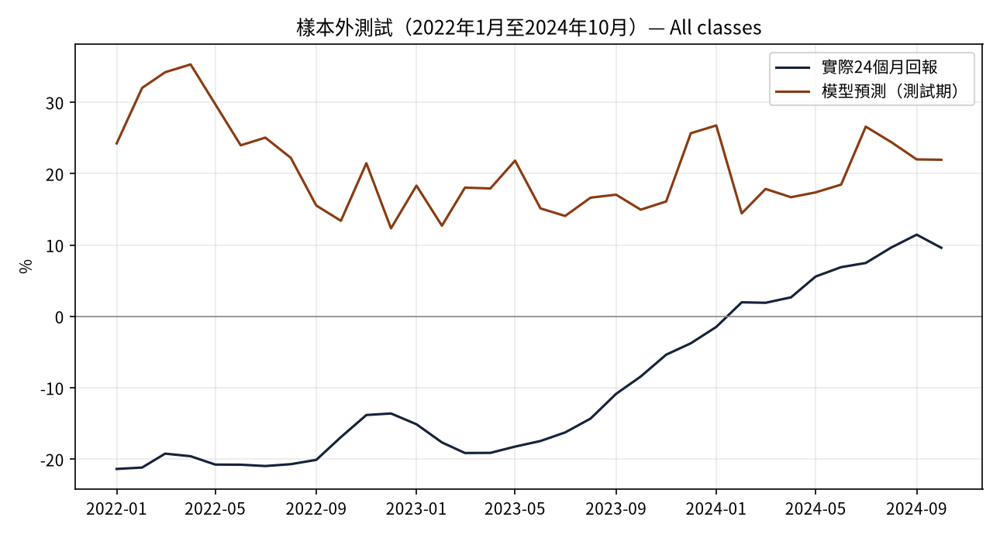
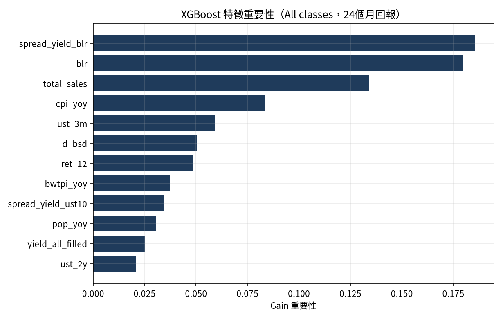
完整模型卡見研究目錄內的說明文件。付款計劃建議與回報情景使用同一套建築期計劃價格，內部一致：比較用的18%折讓不會代入建議的預期回報。
十一、主要風險與尚存資料缺口
- 景觀不受保證；油塘灣綜合發展區及商業（1）地帶120米高度限制，是西面海灣視野的結構性風險。
- 第3期與第2期預計於同一日就建築物及設施落成，入伙時鄰座很可能已經存在。
- B組別後發選樓，較優單位可能在AX、AZ組別已被取走；買家最多只能買一伙，無法以多伙分散。
- 建築期計劃入價高於90天現金計劃，本批呎價又高於第一期兩房成交中位，安全邊際薄。
- 50年地契剩餘年期約47年（入伙時約45年），可能影響按揭及轉售。
- 第2期沒有住宅停車位。
- 物質期為2028年12月30日，兩年持有期大部分時間並無租金。
- 模型樣本外表現薄弱，宏觀預測能力不足。
尚存缺口：未能取得完整官方月度拆息平均及恒生指數歷史，故無股市beta／alpha；未能取得S/K15/29註釋及說明書的完整可下載PDF（入口頁被重定向），高度及地積比率主要依據政府新聞公報、城規會修訂文件及售樓說明書摘錄圖；第3期及油塘灣其餘地段的最終圖則、確實高度及施工時間表仍可能變更；混凝土配料廠停產後的拆卸及未來用途有待觀察；現場實地景觀未能在本研究中核實，售樓說明書亦建議準買家出發視察。登記及成交紀錄、抽籤結果在取數時仍為「即將公布」。
十二、資料來源
主要官方來源及取數日期已整理於網站內的資料來源頁（相對路徑 sources.html），以便在 https://yeung0516.github.io/atlas-ii/ 瀏覽時可以正常開啟。本備忘錄並非要約、招攬或對任何單位景觀的保證。